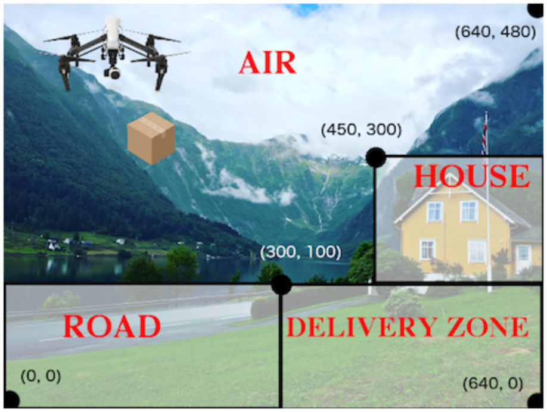

Students are introduced to conditionals using if-expressions, on both built-in data (like numbers) and on programmer-defined data structures.
They then use conditionals to implement an animation that goes through distinct phases. They also learn about helper functions, which abstract away
frequently-used code to improve readability and reduce duplication.
Students learn conditional expressions by writing a simple function
Standards and Evidence Statements:
Standards with prefix BS are specific to Bootstrap; others are from the Common Core. Mouse over each standard to see its corresponding evidence statements. Our Standards Document shows which units cover each standard.
BS-DS.2: The student is able to solve problems using data structures
BS-IDE: The student is familiar with using a REPL, entering expressions properly, and interpreting error messages
Length: 85 Minutes
Glossary:
helper function: A small function that handles a specific part of another computation, and gets called from other functions
piecewise function: a function that computes different expressions based on its input
Materials:
Pens/pencils for the students, fresh whiteboard markers for teachers
Class poster (List of rules, design recipe, course calendar)
Editing environment (Pyret Editor)
Language Table
Preparation:
The What to Wear file, preloaded on students’ machines
rectangle circle triangle ellipse star text scale rotate put-image
What to Wear
Overview
Learning Objectives
Evidence Statementes
Product Outcomes
Students learn conditional expressions by writing a simple function
Materials
Pens/pencils for the students, fresh whiteboard markers for teachers
Class poster (List of rules, design recipe, course calendar)
Editing environment (Pyret Editor)
Language Table
Preparation
The What to Wear file, preloaded on students’ machines
What to Wear(Time 15)
What to Wear
In Bootstrap:Algebra, you learned about the cond syntax for writing
conditional expressions, which would ask questions and pick different
answers depending on the results. Pyret has a similar feature, the if
expression.
Open the file at What to Wear. After reading through the definition for the wear function:
Click Run, so that you can use wear in the interactions area.
What does wear(50) evaluate to?
What does wear(100) evaluate to?
What is the domain and range of the wear function?
What is the name of the variable in the wear function?
Change the wear function to return the shorts outfit when it’s cold
(less than 30 degrees).
The if expression is similar to the cond expression from Racket
in Bootstrap:Algebra. The difference is in the syntax; the
behavior is the same. An if expression has a few parts, in order:
An if clause
Any number of else if clauses
An optional else clause
An end keyword
The if clause has a question, followed by a : (a colon),
followed by an answer for if the question evaluates to true. Each
else if clause also has a question, followed by a colon, followed by
an answer for if the question evaluates to true. Just like in Racket, the else: clause runs if none of the questions in the other clauses evaluated to true. It catches all the cases that aren’t covered by a specific question in one of the if or else if clauses.
We mention that the else: clause at the end of an if expression is optional. Typically, it is important to make sure your code will account for all possible conditions, and ending with else: is a useful catchall condition if all of the other conditions return false. However, this is optional in the case that every single possible condition is covered by else if statements.
At this point, we need to remember an important lesson about the Design
Recipe for conditionals from Bootstrap:1. If we look at the examples for wear, and circle everything that
changes, both the input (the temperature) and the output (the image) change.
However, wear only has a single variable according to the domain in
its contract. Also, the image is completely dependent on the temperature –
it isn’t a separate independent variable, so it wouldn’t make sense for it to be another element in the domain of wear. The fact that we have more changing things than elements in the domain tells us that wear must be a piecewise function. This is the same rule as in Bootstrap:Algebra, and just as we could in Racket, we can tell that a function must be piecewise just by looking at its contract and the examples. This helps us identify when a function we are writing in our games needs to use if, as long as we follow the Design Recipe when building it. Another way to recognize a piecewise function when looking at your examples is to note whether or not there are elements which completely depend on another. In wear, the image depends on the temperature, and does not change independently, or in response to any other changes in the function. Keep an eye out for these dependent variables in your examples as you write them to help identify piecewise functions.
This is an important point to review. Conditionals, or Piecewise functions, are a big moment in
Bootstrap:Algebra, and the extension of the Design Recipe is key for
students to design their own piecewise functions later on. In the next
exercise, make sure they use the Recipe steps to remind them of the mechanics
of this type of function.
Where’s my Order?
Overview
Learning Objectives
write a piecewise function from scratch using the Design Recipe
practice using dot accessors and boolean operations
reinforce the connection between a data structure and its drawing as an animation state
Where’s my Order?Let’s revisit the package delivery drone from earlier. We’re going to write
a function that tells us where the package is for a given DeliveryState.
This is the kind of function you might need to write later on in your game. For example, you may need to know whether a character has reached a portal at a certain part of the screen to advance to the next level, or if they’ve fallen into dangerous lava!
Open your workbook to Page 29. Use the design recipe to write a function to tell you where the falling box is (either "road", "house", "delivery zone", or "air"), based on the DeliveryState.
Use this picture to figure out the regions of the different parts of the
background image:

Once you’ve completed the problem on paper, open the Where's my Order? file. We’ve gotten you started with the contract and purpose statement for location in the file:
Copy the work you have in your workbook to implement location on the computer.
In addition to writing your examples, you can also check that the location
function’s behavior matches what a drawing of a DeliveryState instance
shows. For example, if location returns "road" on some input,
when we draw that same input, it ought to look like the package has landed in the road!
Experiment with this function!
Click "Run" to compile your program, then close the animation window.
In the interactions pane, evaluate location(START). What does it return (hopefully "air")?
Evaluate draw-state(START). does it look like the box is in the air?
Do the same for an instance of a DeliveryState where the box is in the road, on the house, and in the delivery zone.
These experiments show an important connection between functions that
work with instances of a data structure, and the way we draw those instances.
In our design for the animation, we have an understanding of what different
regions of the screen mean. Here, we see that the draw-state and
location functions both share this understanding to give consistent
information about the animation.
Piecewise Bug Hunting
Overview
Learning Objectives
Practice with conditional syntax
Evidence Statementes
Product Outcomes
Materials
Preparation
Piecewise Bug Hunting(Time 15)
Piecewise Bug Hunting
Open your workbook to Page 30. In the left column, we’ve given you broken or buggy Pyret code. On the right, we’ve given you space to either write out the correct code, or write an explanation of the problems with the provided code. Work through this workbook page, then check with your partner to confirm you’ve found all the bugs!
Colorful Sun
Overview
Learning Objectives
Add a conditional to a draw function
See a piecewise function in action in a reactor
Evidence Statementes
Product Outcomes
Materials
Preparation
Colorful Sun(Time 20)
Colorful SunLet’s return to your sunset animation from the previous unit. Currently, the sun’s x and y-coordinate change to make it move across the screen and disappear behind the horizon. In this unit, we’ll make the animation a bit more realistic, by changing the color of the sun as it gets lower in the sky. At the top of the screen, the sun should be yellow, then change to orange as it gets to the middle of the screen, and then become red as it reaches the bottom, close to the horizon.
In programming, it is fairly common that you will change a program that you’ve already
written to do something new or different. Modifying existing code is a valuable skill, and
one that we want to practice with this exercise. It is so useful, in fact, that we’ve
created a worksheet to help you map out what needs to change in an existing animation
to support new behavior.
Turn to Page 31. Fill in the description
of the animation change and three sample images at the top of the first page.
If you don’t have colored pencils, just make an annotation near each sketch
as to what color the sun should be in that sketch.
Once you know what new behavior you want, the next task is to build it into your code.
The next two tables in the worksheet ask you to think about the NEW features that are
changing in your game and how you might capture them.
Talk with your partner about what new information is changing and how you might
build that into your program. Does the color change in a predictable way?
Is the color a new field that is independent of the fields you already have?
Based on your answer, do you think you will need to add something new to your
SunsetState data structure, or can you change the look of your animation
based on what is already there?
There are a number of ways students can solve this problem. Once students have brainstormed
with their partners, have a classroom discussion to have pairs share their ideas.
Since the color of the sun will be changing, we could add a field to the
SunsetState data structure, such as a String with the current color name.
However, the color will not change independently:
we want the color to change based on the position of the sun in the sky, and get darker as it gets lower.
Let’s figure out how to make the sun color change based only on the fields we already have.
Fill in the table at the bottom of the worksheet
assuming we are not changing the data structure: which components
(including existing functions) need to change?
If we have decided not to add fields, you should have marked that the draw-state
method changes, but nothing else needs to. We only change next-state-tick and
next-state-key if there has been a change to the data structure.
You may need to guide students to realizing that a change in the appearance of the
animation can be done entirely through draw-state. This is another point for
emphasizing the separation between maintaining instances and drawing instances.
How do we change draw-state? Our first instinct may be to turn it into a piecewise function,
and draw something different when the SunsetState’s y-coordinate gets below 225 or below 150.
This would yield code along the lines of:
Notice that this version contains three very similar calls to put-image. The only
thing that is different about these three calls is the color we use to draw the sun. Whenever you
find yourself writing nearly-identical expressions multiple times, you should create another
function that computes the piece that is different. You can then write the
overall expression just once, calling the new function to handle the different part. Functions
that handle one part of an overall computation are called helper functions.
Assume for the moment that we had written a helper function called draw-sun that takes a
SunsetState and returns the image to use for the sun. If we had such a function, then
our draw-state function would look as follows:
Open your workbook to Page 33. Here we have directions for
writing a function called draw-sun, Which consumes a SunsetState and produces an
image of the sun, whose color is either "yellow", "orange", or "red" depending on its y-coordinate.
The word problem assumes a background scene size of 400x300 pixels. Once students use their
draw-sun function in their animation, they may need to change the specific conditions
if they have a much larger or smaller scene.
Once you’ve completed and typed the draw-sun function into your sunset animation program, modify draw-state to use it as we showed just above.
Now let’s think about having the sunset animation "start again" after the sun sets, with the sun
reappearing in the upper-left corner.
Assume you edited your animation to restart the sun at the upper left after it sets.
What color should the sun be
when it appears at the upper-left the second time around? What color will it be
based on your code? Will it be yellow again, or will the color have changed somehow to red?
To figure this out, think about what controls the color of the sun in your current code.
Edit the sunset animation so that the animation restarts. Which of your functions
has to be modified to include this change? Is restarting fundamentally about drawing one
frame or about generating new instances? Use that question to help yourself figure out which
function to modify. You could use the space for examples of functions at the end of your
worksheet on extending the animation to write a new example before you modify your code.
This question about the color of the sun is an especially good question-and it likely to
come up-from students who may have experience programming with variables and updates in other languages,
such as Scratch (where the color would have changed to red). In our approach, where we simply
determine the sun color from the y-coordinate, the sun should naturally restart as yellow.
Of course, if students had maintained the sun color as a separate field in their data structure,
they would have to consider this issue, and manually reset the sun color as well as the y-coordinate
when restarting the animation.
Optional:In addition to changing the color of the sun, have the background color change
as well: it should be light blue when the sun is high in the sky, and get darker as the sun sets.
Like changing the color of the sun, there are multiple valid ways of completing this
optional activity. If you have students solving the same problem with different code,
have them share their code with the class and have a discussion about the merits of each version.